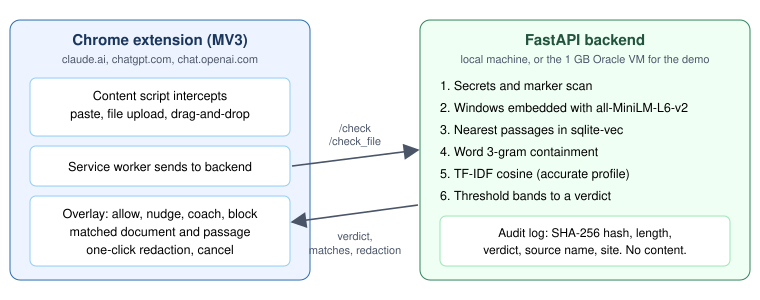
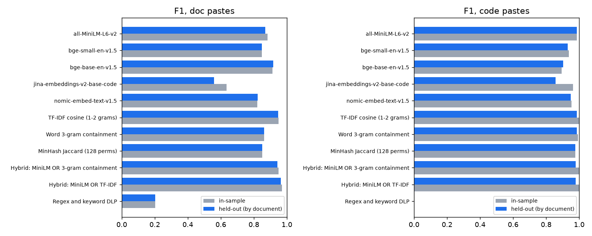
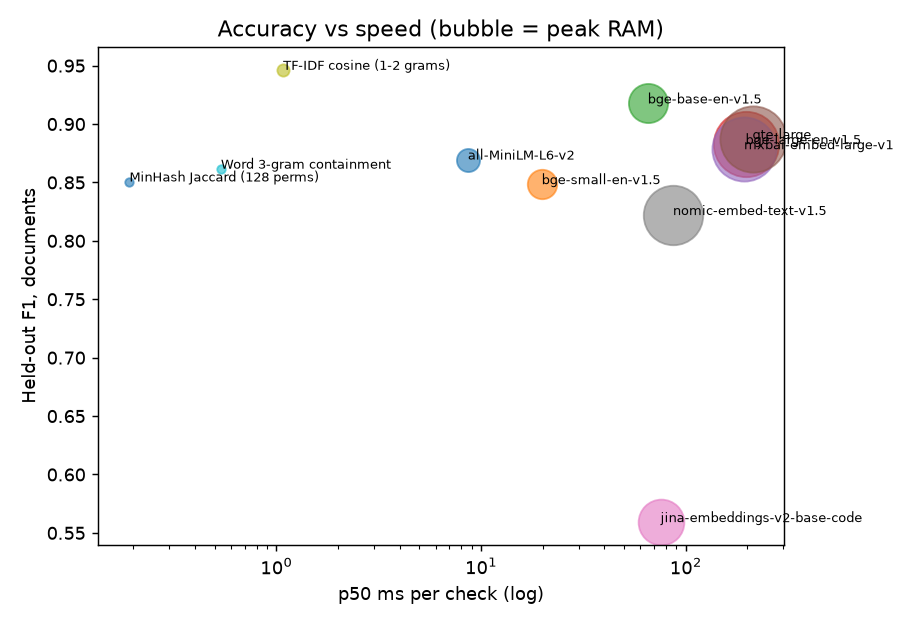
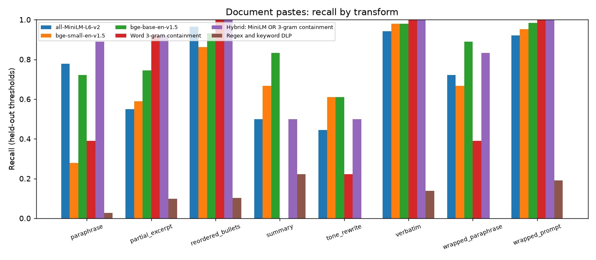
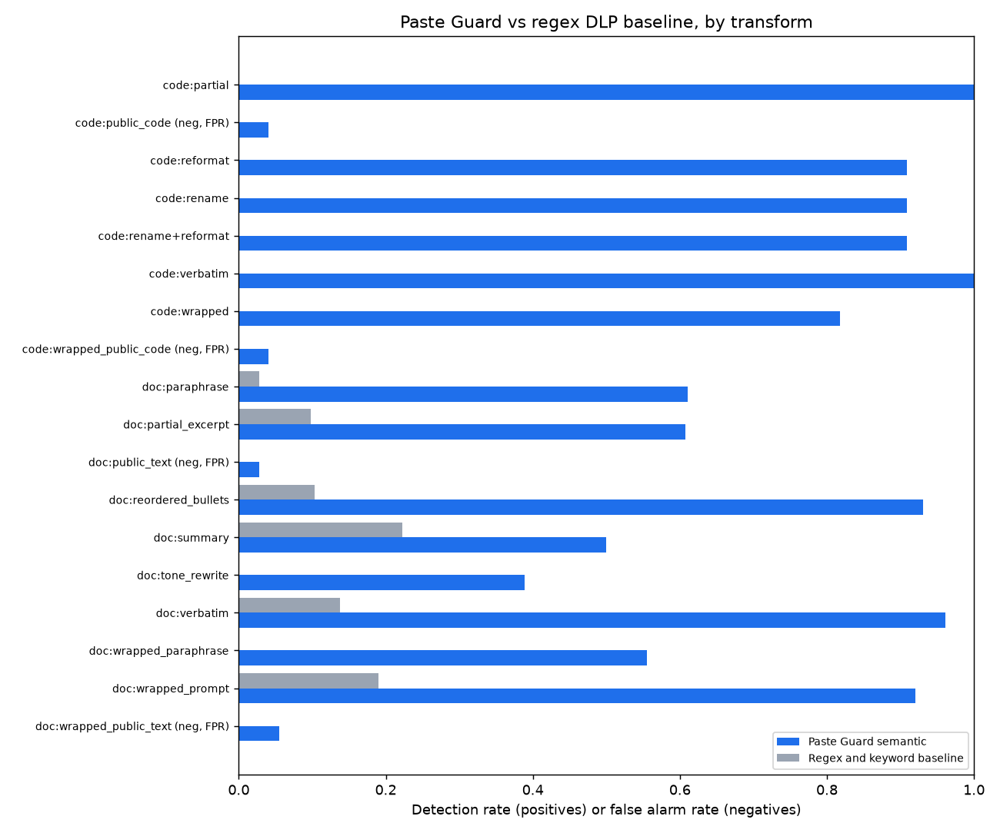

Checking what gets pasted into AI chat tools against a company's own documents and code
Paste Guard is a Chrome extension plus a small backend. When someone pastes text, uploads a file or drops a file into Claude or ChatGPT, it checks the content against the company's own documents and code, then answers allow, nudge, coach or block. It shows which document matched and which passage, and offers one-click redaction.
Nothing is trained. It uses a public pretrained embedding model (all-MiniLM-L6-v2) as-is, next to two cheap lexical checks. The only things I fitted to my data are the thresholds, and I report accuracy on documents the thresholds were never tuned on.
| Fast profile (previous default) | Accurate profile (default since v0.5.1) | |
|---|---|---|
| Signals for documents | MiniLM OR word 3-gram | MiniLM OR word 3-gram OR TF-IDF |
| Held-out document F1 | 0.943 | 0.966 |
| Held-out recall / precision | 0.90 / 0.99 | 0.94 / 0.99 |
| False alarms on document negatives | 2.8% | 2.8% (2 of 72) |
| Full /check request, p50 / p95 | 16 ms / 58 ms | 19 ms / 56 ms |
| Regex and keyword baseline, document F1 | 0.20 | 0.20 |
Latency figures are from my 8 vCPU machine. On the 1 GB VM the fast profile ran at p50 208 ms and p95 995 ms (more on that under limitations).
On our call on 9 October you described a very ordinary way data leaves a company: someone has a confidential document, wants a quick summary, and pastes it or drops the file into Claude or ChatGPT. You also described Sidekick's approach of stepping in at that moment with a nudge, some coaching or a block, rather than banning the tools outright.
That raised a question I wanted to answer properly: at the moment of the paste, can you tell whether the content is ours, and not just whether it looks sensitive? People rarely paste a document with "CONFIDENTIAL" on top. They paste a paragraph, reword it, trim it or wrap it in "summarize this for me". I built Paste Guard over 12 and 13 October to see how far a local, cheap approach gets on that question and where it breaks.
Regex and keyword DLP. Rules for secrets, card numbers and "CONFIDENTIAL" banners are useful, and Paste Guard keeps them for secrets. But on my eval set a regex and keyword baseline (secrets rules, confidentiality markers and a sensitive business keyword list) caught 11% of confidential document pastes and none of the code pastes. It caught 3% of paraphrases.
Category classifiers. From what I could find publicly, most tools in this space (WASViking, Harmonic, LayerX, Nightfall and others) label content by type: PII, secrets, source code, legal text. That tells you a paste looks like a legal document. It does not tell you that it is paragraph three of your own acquisition memo, and it cannot name the source.
Fingerprinting and lineage. Document fingerprinting and exact data match handle verbatim and lightly edited copies but are weak on paraphrase. Microsoft's documentation for Purview's paste-to-browser control says it does not support exact data match or document fingerprinting on paste at all. Cyberhaven tracks where data came from, which misses text that was retyped or copied from somewhere its agent does not see.
Where Paste Guard sits. It matches each paste against an index of the company's own documents and code, locally, and catches rewording as well as copies. From Sidekick's public site I could not tell whether you inspect paste content today, so I see this as a possible extra signal next to what Sidekick already knows (the account, the app, the settings), not as a claim about a gap in Sidekick. A personal Claude account plus a strong match to a board memo is a very different event from a corporate account pasting a public article.

Extension (Chrome, Manifest V3). A content script on claude.ai, chatgpt.com and chat.openai.com intercepts three things: paste, file picker uploads and drag-and-drop. Text files (.txt, .md) are read in the browser. PDF and DOCX files go to the backend for text extraction. The service worker sends the content to the backend and the overlay shows the verdict, the matched document, the matched passage and a redaction button. The toolbar icon shows a green dot when protection is on, and the settings page allows a per-site pause.
Backend (FastAPI). It runs on the same machine or a company server. For the demo it runs on a 2 vCPU, 1 GB Oracle VM that also hosts my existing Techvista services. Each check does the following:
Indexing. Documents are split on paragraph boundaries into 120 to 200 word chunks with overlap, plus shorter 60 word passages so a short excerpt still has a close neighbour. The demo index has 485 document passages and 109 code chunks. ./pasteguard reindex rebuilds it and the running server picks up the change.
Redaction. Headings and code signatures are kept, and each removed block becomes [REDACTED: matches <source> paragraphs a-b] (or lines a-b for code), so the AI tool still gets the structure of the question.
Privacy. Paste text is processed in memory and never written to disk. The model is downloaded once and then runs offline. The verdict log behind the admin page stores only a SHA-256 hash, the length, the verdict, the matched source name and the site, kept for 30 days. The admin page is served only to local connections.
All of it is synthetic. I wrote a corpus of 18 confidential documents for a fictional company, Calloway Metrics: board memos, an M&A term sheet, a layoff plan, compensation bands, pricing, a customer list with contract values, a security incident postmortem, a legal settlement summary, a product roadmap and similar, in .md, .txt, .pdf and .docx. The code side is one real open source Python repository standing in for a company repo.
The eval set has 472 labelled pastes, generated with Claude:
| Set | Positives | Negatives |
|---|---|---|
| Documents (356) | 284 in 8 paste types | 72: public business text, alone (36) and wrapped in a prompt (36) |
| Code (116) | 66 in 6 paste types | 50: public code, alone (25) and wrapped in a prompt (25) |
Document paste types: verbatim (51), partial excerpt (51), paraphrase (36), reordered bullets (29), summary (18), tone rewrite (18), paraphrase wrapped in a prompt (18) and text wrapped in a prompt such as "summarise this for me" (63). Code paste types, 11 each: verbatim, partial, renamed, reformatted, renamed and reformatted, and wrapped in a prompt.
To be clear up front: I did not train or fine-tune any model. Matching uses sentence-transformers/all-MiniLM-L6-v2, a public pretrained sentence embedding model (384 dimensions, 91 MB as ONNX), used zero-shot. The 3-gram and TF-IDF checks are not learned at all, apart from TF-IDF's vocabulary and IDF weights, which come from the indexed corpus. No eval text was ever used as training data.
What I did tune is the thresholds. Each sweep scans 0.40 to 0.95 in 0.01 steps and keeps the best F1 with false alarms at or below 3% (5% before v0.5). Tuning and scoring on the same samples flatters the result, so the benchmark uses a held-out split by document: the 18 documents are split into two halves of 9, thresholds are tuned on pastes from one half and scored on pastes from the other, then the halves swap. Code is split by source file. The gap between in-sample and held-out turned out small (1 to 3 points of F1), so the thresholds are not memorising particular documents. It does not tell me whether another company's documents land in the same similarity range. That needs a second corpus.
I benchmarked eight pretrained embedding models, three non-neural baselines and a set of hybrids on the same paste windows and index. The rules were a full check p95 under 100 ms on a normal CPU and false alarms at most 3%. Held-out document results (latency is scoring only, on my machine, 2 threads):
| Method | F1 | Recall | False alarms | Summary recall | p50 | p95 | Meets both rules |
|---|---|---|---|---|---|---|---|
| all-MiniLM-L6-v2 | 0.870 | 0.77 | 2.8% | 0.50 | 9 ms | 65 ms | yes |
| bge-small-en-v1.5 | 0.848 | 0.74 | 1.4% | 0.67 | 20 ms | 144 ms | no |
| bge-base-en-v1.5 | 0.918 | 0.86 | 6.9% | 0.83 | 65 ms | 474 ms | no |
| bge-large-en-v1.5 | 0.883 | 0.80 | 2.8% | 0.72 | 196 ms | 1159 ms | no |
| mxbai-embed-large-v1 | 0.878 | 0.79 | 2.8% | 0.72 | 192 ms | 1305 ms | no |
| gte-large | 0.887 | 0.80 | 2.8% | 0.83 | 212 ms | 1339 ms | no |
| jina-embeddings-v2-base-code | 0.559 | 0.39 | 2.8% | 0.28 | 75 ms | 433 ms | no |
| nomic-embed-text-v1.5 | 0.822 | 0.71 | 5.6% | 0.33 | 87 ms | 590 ms | no |
| TF-IDF cosine (1-2 grams) | 0.946 | 0.90 | 1.4% | 0.28 | 1 ms | 2 ms | yes |
| Word 3-gram containment | 0.862 | 0.76 | 0.0% | 0.00 | 1 ms | 2 ms | yes |
| MinHash Jaccard | 0.851 | 0.74 | 1.4% | 0.06 | 0 ms | 1 ms | yes |
| MiniLM OR 3-gram (fast) | 0.943 | 0.90 | 2.8% | 0.50 | 9 ms | 67 ms | yes |
| MiniLM OR TF-IDF | 0.964 | 0.94 | 4.2% | 0.56 | 10 ms | 66 ms | no |
| bge-base OR 3-gram OR TF-IDF | 0.970 | 0.96 | 8.3% | 0.78 | 67 ms | 478 ms | no |
| mxbai-large OR 3-gram OR TF-IDF | 0.971 | 0.95 | 2.8% | 0.78 | 194 ms | 1309 ms | no |
| MiniLM OR 3-gram OR TF-IDF (accurate) | 0.966 | 0.94 | 2.8% | 0.56 | 10 ms | 69 ms | yes |
What I took from it:


Once RAM stopped being the constraint (backend on a desktop instead of the VM), I asked what the most accurate setup is that still meets both rules. The answer was MiniLM OR 3-gram OR TF-IDF. The three signals cover different kinds of paste: MiniLM covers meaning (paraphrase, summary), 3-gram covers exact excerpts, and TF-IDF covers rewording that keeps the rare words.
Held-out documents: F1 0.966, recall 0.94, precision 0.99, false alarms 2.8% (2 of 72), against 0.943, 0.90, 0.99 and 2.8% for the fast profile. Tone rewrites go from 0.50 to 0.72 and summaries from 0.50 to 0.56. Over 120 real /check requests over HTTP on my machine (8 vCPU, 2 threads) it measured p50 19 ms and p95 56 ms, with the backend at 379 MB. It uses the same model and index as the fast profile, so switching needs no reindex. Since v0.5.1 it is the default; the old setup is profile = "fast" or PG_PROFILE=fast. TF-IDF is turned off for code in this profile, because on code it added false alarms (6% held-out on 50 negatives) without adding recall, which was already 1.00.

Every number in this section comes from a committed results file or the benchmark script, which can be re-run.
| Step | Change | Document result at coach level |
|---|---|---|
| 1 | Embedding model and sqlite-vec index, code only | n/a |
| 2 | Documents added: 12 docs, paragraph-aware chunks plus 60 word passages, 280 samples | P 0.98, R 0.82, F1 0.89, FPR 0.03 |
| 3 | Corpus grown to 18 longer, more varied documents, harder eval set (356 samples), thresholds retuned | P 0.99, R 0.75, F1 0.85, FPR 0.04 |
| 4 | Chunking bug fixed (the same 30 words could appear up to three times in a chunk) | P 0.99, R 0.80, F1 0.88, FPR 0.03 |
| 5 (v0.4) | Hybrid matching, MiniLM OR 3-gram, separated threshold bands | P 1.00, R 0.87, F1 0.93, FPR 0.01 (in-sample) |
| 6 (v0.4) | Held-out split by document added | Hybrid F1 0.94, R 0.90, FPR 0.03 |
| 7 (v0.5) | False alarm budget tightened to 3%, accurate profile | F1 0.966, R 0.94, FPR 0.028 |
Step 3 lowered the numbers on purpose. The bigger corpus and harder eval set are closer to reality, and the earlier 0.82 recall was on an easier set.
A correction on short passages. Adding the 60 word passages next to the long chunks is the largest single gain I found. A short excerpt or a one-paragraph summary has no close neighbour among 160 word chunks, because the rest of the chunk dilutes its vector. At one point I summarised this gain as "30% to 80%". When I went back to check, no recorded run supported that figure. The measured result is 51% to 80% recall at a fixed threshold of 0.63, or 69% to 80% when each index gets its own best threshold. I corrected it in the log, and the measured figure is the one I stand behind.
Threshold bands. v0.3 shipped document bands of nudge 0.62 and coach 0.63, one hundredth apart, so nudge almost never fired on its own. In v0.4 I read the bands off the score distribution: nudge 0.58 (a soft "double check", recall 0.89 but FPR 0.13 in-sample), coach 0.64 (the best-F1 point) and block 0.74 (above every negative I have seen). The 3-gram bands are coach 0.25 and block 0.50. The best tuned value was 0.14, but the highest negative scored 0.13, so I left a margin. Code bands are 0.55, 0.65 and 0.85.

In-sample, the top match named the right source document 98% of the time (314 detected positives). On held-out thresholds the v0.4 hybrid named the right one 93% of the time (255 detected).
Beyond the offline eval, I ran it by hand in both ChatGPT and Claude:
| Test | Result |
|---|---|
| Verbatim paste of a confidential document | Blocked |
| Paraphrased paste of a confidential document | Blocked |
| Paste of code from the company repo | Coached |
| One-click redaction | Works |
| Cancel from the overlay | Works |
| Normal, unrelated text | Allowed through |
| PDF upload of a confidential document | Blocked |
| Drag-and-drop of a file | Not tested yet |
Drag-and-drop is implemented in the extension, but I have not checked it end to end in either site, so I am not counting it as working.
Sources: README.md, docs/OPTIMIZATION_LOG.md, eval/benchmarks.md, eval/results.md, CHANGELOG.md and paste-guard.toml in the repo. Market and competitor notes are from public vendor pages and documentation.